HopIn : La culture étudiante
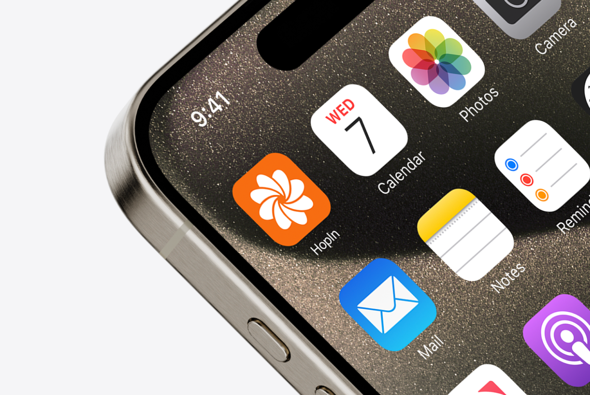Contexte
HopIn est un projet fictif qui a pour but de faciliter l'accès à la culture pour les jeunes et de créer des événements pour étudiants. Ce projet a été réalisé en groupe de 4. Nous avons réalisé une charte graphique complète s'accompagnant des maquettes de l'application et de la version desktop.
Points forts du service
Centralisation des événements : Une seule plateforme pour accéder à l'ensemble des activités culturelles locales.
Personnalisation : Suggestions adaptées aux préférences, à la localisation et à l’emploi du temps des utilisateurs.
Création d’événements : Possibilité pour les étudiants de proposer leurs propres activités, favorisant l’initiative personnelle.
Accès abordable : Mise en avant des événements gratuits ou à tarif réduit pour les budgets étudiants.
Besoins des personas
Rencontrer des personnes, s'amuser, faire une activité autre que ses études, partager des moments avec ses amis, partager sa curiosité pour les arts et passer un bon moment avec des personnes qu’il ne connaît pas nécessairement.
Identité graphique
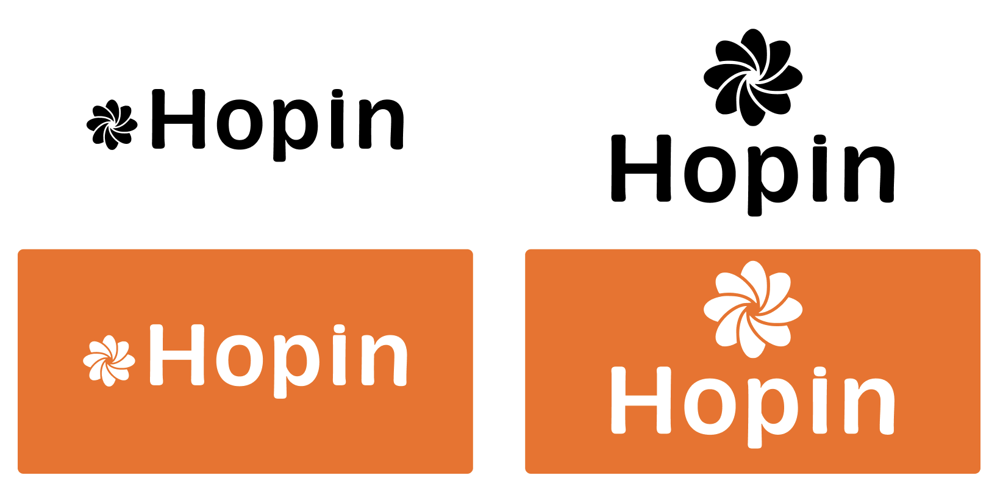 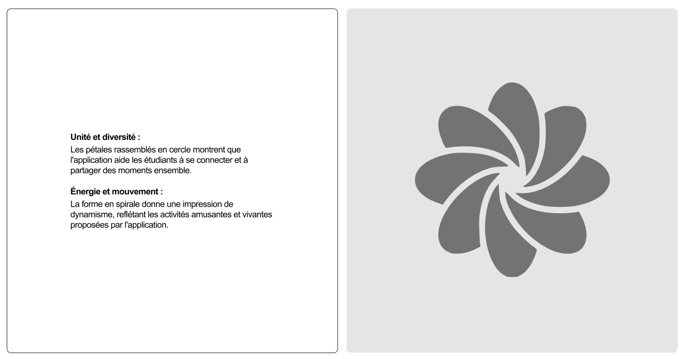 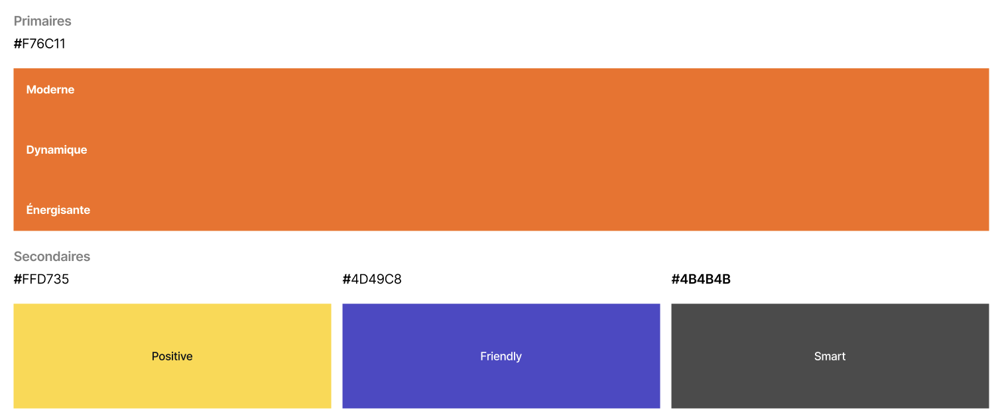 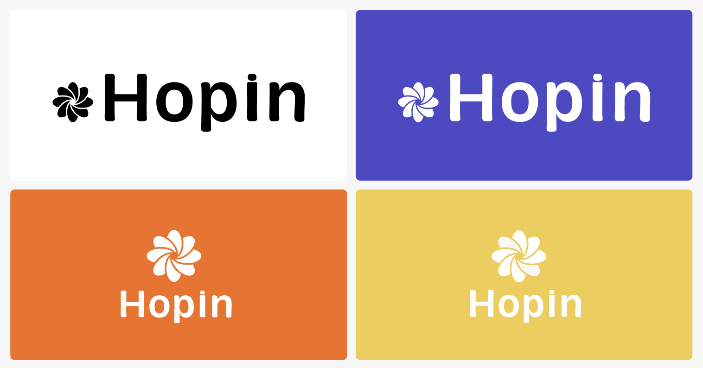Parcours d'entrée
L'utilisateur peut découvrir l'application via un parcours introductif. Ce parcours est segmenté en 3 pop-ups qui peuvent être ignorés si voulu.
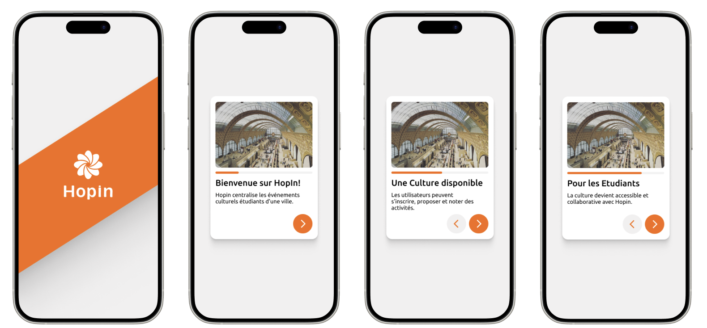Parcours de création de compte
L'utilisateur va découvrir l'application sans avoir besoin de se connecter. Cette approche permet d'éviter les frictions avec le service. La connexion à un compte est engageante et sera obligatoire lorsque l'utilisateur voudra participer à des événements.
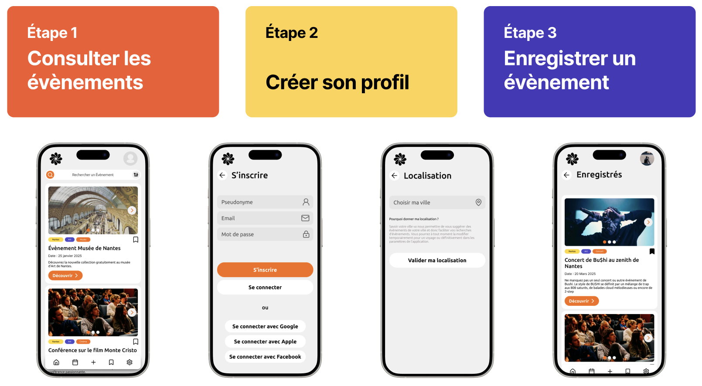Parcours réservation d'événement
L'utilisateur peut réserver un événement et accéder aux informations pour le réserver si c'est un service autre. À la fin du parcours, si l'événement est répétitif, l'utilisateur peut le noter pour informer les autres utilisateurs qui consulteront cet événement.
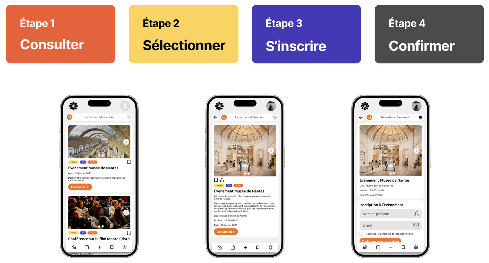 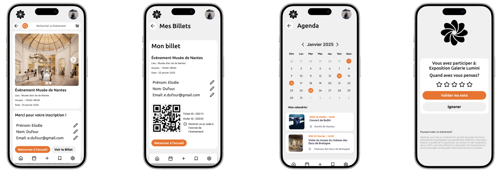Parcours création d'événements
Il existe deux versions de ce parcours, une sur téléphone et une sur ordinateur. En effet, pour créer un évènement il est des fois préférable d'être sur ordinateur.
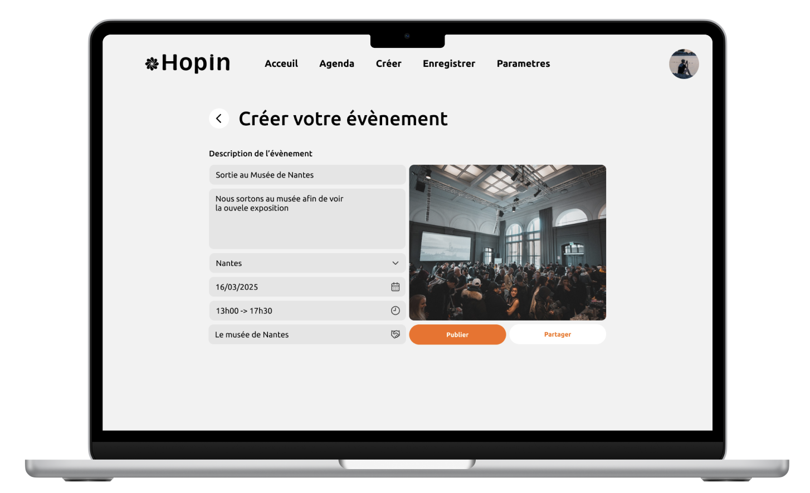 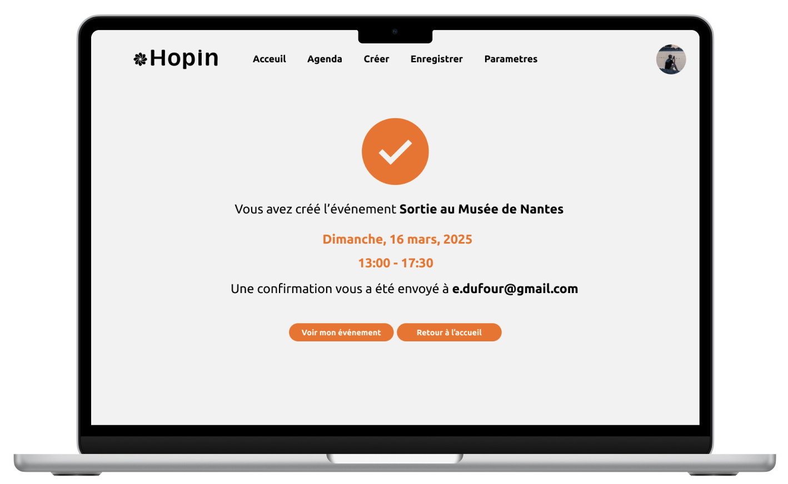Voir d'autres projets :